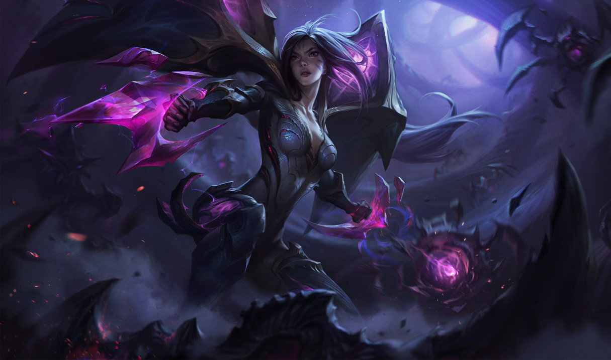

| Foto |
Nombre |
Rol |
Dificultad |
Descripcion |
Habilidad 1 |
Habilidad 2 |
Habilidad 3 |
Habilidad 4 |
 |
Caitlyn |
Tirador |
Moderada |
Reconocida como su mejor pacificadora, Caitlyn es también la mejor arma de Piltover para librar a la ciudad de sus elusivos elementos criminales. A menudo trabaja con Vi, y actúa como un frío y eficiente contrapunto para la naturaleza más impetuosa de su socia. A pesar de que lleva un rifle hextech único, el arma más poderosa de Caitlyn es su inteligencia superior, lo que le permite colocar trampas elaboradas para cualquier infractor de la ley lo suficientemente necio como para operar en la Ciudad del Progreso. |
PACIFICADORA DE PILTOVER |
TRAMPA PARA YORDLES |
RED DE CALIBRE 90 |
AS EN LA MANGA |
 |
Ezreal |
Tirador |
Moderada |
Ezreal, un aventurero aficionado a deslizarse y dotado de artes mágicas sin saberlo, saquea catacumbas perdidas, lidia con maldiciones ancestrales y supera con facilidad adversidades imposibles. De valor y chulería sin límites, prefiere improvisar para salir de cualquier situación peliaguda, confiando en parte en su ingenio, pero sobre todo en su guantelete místico de Shurima, que utiliza para desatar devastadoras ondas explosivas arcanas. Una cosa sí es segura: cuando Ezreal se deja ver, los problemas no andan muy por detrás. Ni muy por delante. Seguramente estén por todas partes. |
DISPARO MÍSTICO |
FLUJO DE ESENCIA |
ALTERACIÓN ARCANA |
ANDANADA CERTERA |
 |
Jhin |
Tirador |
Moderada |
Jhin es un meticuloso criminal psicópata que ve el asesinato como arte. Otrora prisionero jonio, fue liberado gracias a los sombríos tejemanejes del consejo de Jonia. Ahora, el asesino en serie trabaja como sicario de la secta. Con su pistola como pincel, la obra de Jhin muestra un arte brutal, tanto para las víctimas como para los espectadores. Encuentra un cruel placer en la escenificación atroz, lo cual lo convierte en un candidato sin igual para mandar el más poderoso de los mensajes: el terror. |
GRANADA DANZANTE |
FLORECER MORTAL |
PÚBLICO ENTREGADO |
ABAJO EL TELÓN |
 |
Jinx |
Tirador |
Moderada |
Jinx, una criminal perturbada e impulsiva de Zaun, vive para sembrar el caos sin importarle las consecuencias. Provoca las explosiones más ruidosas y cegadoras con su arsenal de armas letales para dejar un rastro de terror y destrucción a su paso. Jinx aborrece el aburrimiento y disfruta dejando su peculiar impronta allá donde va. |
¡CAMBIAZO! |
¡ZAP! |
¡MASCAFUEGOS! |
¡SUPERMEGACOHETE MORTAL! |
|  |
Kai'Sa |
Tirador |
Moderada |
Reclamada por el Vacío cuando era solo una niña, Kai'Sa logró sobrevivir por pura tenacidad y fuerza de voluntad. Sus experiencias la han convertido en una cazadora letal y, para algunos, el presagio de un futuro que preferirían no vivir para ver. Ahora que ha entrado en una tensa simbiosis con un caparazón viviente del Vacío, pronto llegará el momento de decidir si perdona a aquellos mortales que la llaman monstruo y se alía con ellos para tratar de derrotar a la oscuridad que se avecina... o simplemente deja que su mente olvide y que el Vacío consuma el mundo que la abandonó. |
LLUVIA DE ICATHIA |
BUSCADOR DEL VACÍO |
SUPERCARGA |
INSTINTO ASESINO |